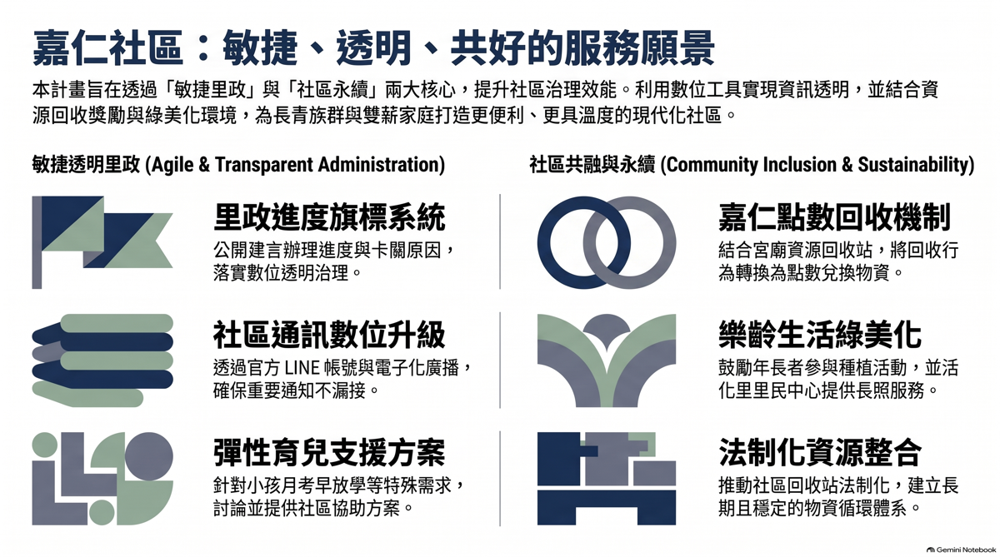

效能服務・數位透明
3S 核心政見：Services 專案
活化空間與長照開課
- 活化活動中心：優化里民活動中心空間，開辦多元實用課程。
- 推動長照服務：結合長照資源，為長輩打造溫馨的學習與交流天地。
#活化活動中心
#長照課程
敏捷透明里政
- 進度旗標系統：推動專屬的「里政進度旗標系統」，各項案件進度隨時掌握。
- 公開透明：全面公開建言處理進度與卡關原因，讓里政運作不黑箱。
#里政透明
#進度旗標系統
社區數位升級
- 官方LINE帳號：建置嘉仁里專屬官方 LINE 帳號，提供即時里民服務。
- 廣播電子化：推動 LINE 廣播電子化，確保防疫、防災等重要通知不再漏接。
#官方LINE
#廣播電子化
樂齡綠美化
- 推動綠色社區：鼓勵年長者共同參與社區巷弄植栽與綠美化種植。
- 身心樂活：不僅點綴嘉仁里環境，更能促進長輩走出戶外、活絡社區互動。
#樂齡種植
#社區綠美化
嘉仁點數回收
- 法制化回收站：結合在地宮廟與社區資源，建立法制化、系統化的資源回收站。
- 物資兌換：首創「社區積點」制度，讓里民能用環保行動兌換日常民生物資。
#法制回收站
#社區積點
搭把手・社區互助
- 搭把手計畫：提倡社區互助精神，日常生活遇困隨時助您一臂之力。
- 月考安親對策：針對少子化與孩童月考提早放學，與社區共同討論並建立安心配套方案。
#搭把手計畫
#月考安親
嘉仁社區服務願景規劃

點擊圖片放大檢視
×